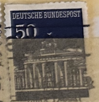
| SOURCE | TITLE| IMAGE MATCH | click to source page |
| eBay | Brandenburg Postage Stamps for sale | eBay | 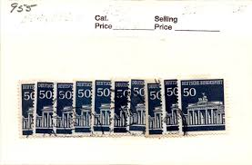 |
| Amazon.com | Amazon.com: FRD (FR.Germany) 509 Horizontal Couple unmounted Mint/Never hinged ** MNH 1966 Brandenburg Tor (Stamps for Collectors) : Toys & Games | 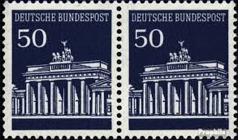 |
| PicClick UK | FEDERAL REPUBLIC OF Germany 2007 Block Issue UNESCO World Heritage Mi. No. Block 72 ** £1.59 - PicClick UK | 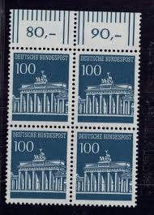 |
| eBay | ZAYIX Germany 956 MNH Pair Historical Landmark Brandenburg Gate 042623S94 | eBay | 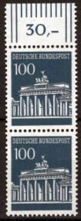 |
| Mercari | Postage stamp from Germany Like new | Mercari | 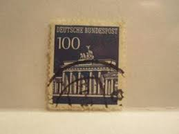 |
| eBay | 1966, Berlin, 289 DZ, ** - 1777119 | eBay | 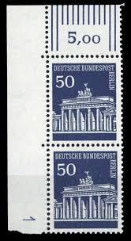 |
| eBay | Germany, Postage Stamp, #955 NH, 956 LH Mint, 1966 Brandenburg Gate (AB) | eBay | 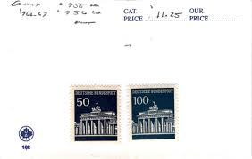 |
| eBay | Brandenburg Mint Never Hinged/MNH German & Colonies Stamps for sale | eBay | 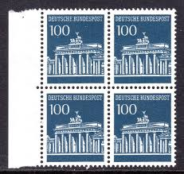 |
| Amazon.com | Amazon.com: Berlin (West) 51 1949 Berlin Buildings (Stamps for Collectors) : Toys & Games | 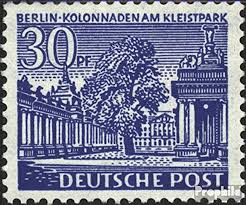 |
| eBay | 560)) Berlin BT Mi 289° in 3er Streifen ungefaltet mit Gummierung | eBay | 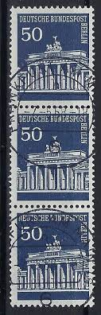 |
| eBay | Germany (FRG) 510 under edge piece mint/MNH 1966 Branden | eBay | 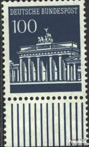 |
| Flickr | stamp Germany 50pf. Deutschland Briefmarken timbre allemag… | Flickr | 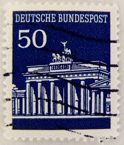 |
| PicClick | DEUTSCHE BUNDESPOST Wittenberg/Ellwangen/Jagst 1DM/50PF Postage Stamp 03/66 $8.10 - PicClick | 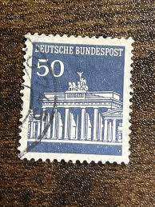 |
| Amazon.com | Amazon.com: Berlín (West) 290R con número de conteo desmontado Mint/Nunca abisagrado ** MNH 1966 Brandenburg Tor (Sellos para coleccionistas) : Juguetes y Juegos | 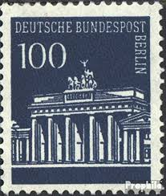 |
| Alamy | Brandenburg gate berlin postage stamp hi-res stock photography and images - Alamy | 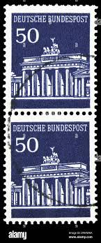 |
| eBay | GERMANY FEDERAL REPUBLIC BRANDENBURG TOR BOOKLET RARE MICHEL 14d PERFECT MNH | eBay | 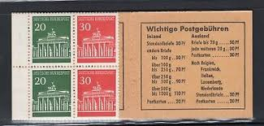 |
| The Philately | West Berlin 1966-1967 Mi 286-290 Brandenburg Gate Sc 9N251-9N255 for sale at The Philately | 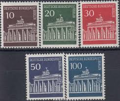 |
| The Itty Bitty Stamp Company | Germany Berlin Scott # 9N251c Mint Never Hinged – The Itty Bitty Stamp Company | 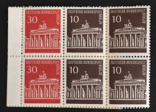 |
| Amazon.com | Amazon.com: FRD (FR.Germany) 510 Side Piece unmounted Mint/Never hinged ** MNH 1966 Brandenburg Tor (Stamps for Collectors) : Toys & Games | 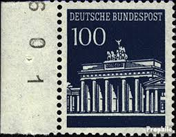 |
| ilcs.org | German Empire 803 (Complete.Issue.) Unmounted | 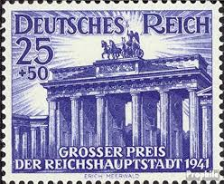 |
| Todocolección | alemania ddr sello usado - 9/33 - Compra venta en todocoleccion | 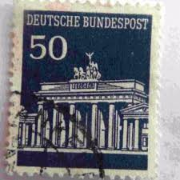 |
| iStock | German Post Stamp Berlin Wall 1990 Stock Photo - Download Image Now - 1989, Germany, Berlin - iStock | 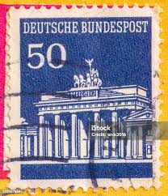 |
| Shutterstock | German Post Stamp: Over 18,988 Royalty-Free Licensable Stock Photos | Shutterstock | 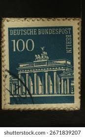 |
| eBay | Bund 1966 Marke 509 v DZ 4 (Druckerzeichen 4) Brandenburger Tor Postfrisch | eBay | 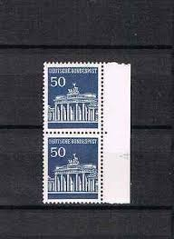 |
| eBay | Strip of 5 stamps, mint, Mi. 120,- | eBay | 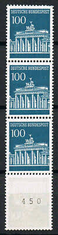 |
| Amazon.com | Amazon.com: FRD (FR.Germany) 509 Side Piece unmounted Mint/Never hinged ** MNH 1966 Brandenburg Tor (Stamps for Collectors) : Toys & Games | 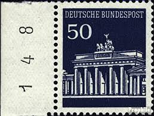 |
| eBay | Germany, Postage Stamp, #956 Lot Used, 1966 Brandenburg Gate (AC) | eBay | 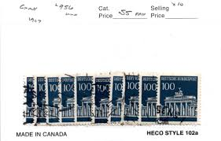 |
| eBay | West Germany - 1966 - Brandenburger Tor - 100Pfg - Used - #07 | eBay | 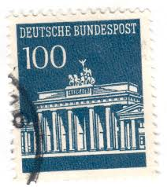 |
| Etsy | Yearbooks 1992 to 1998 (excluding 1995) Beautiful | Germany | Stamps Mint in the Yearbook as a Collection - Etsy Canada | 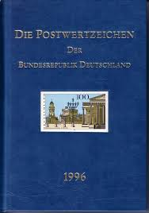 |
| eBay | German Architecture Postal Stamps for sale | eBay | 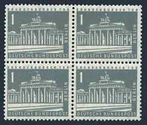 |
| lastdodo.com | Joachim Hans Hiller [1915] Stamp catalogue - LastDodo | 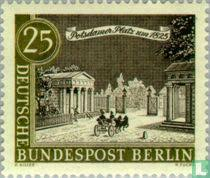 |
| Shutterstock | 6+ Thousand Deutsche Post Royalty-Free Images, Stock Photos & Pictures | Shutterstock | 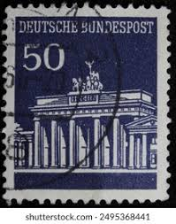 |
| eBay | VF (Very Fine) Red German & Colonies Stamps for sale | eBay | 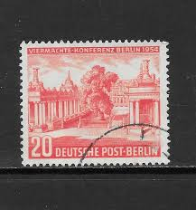 |
| Goethe-Institut | Ms. Gerda Frank Waldstraße 33 28025 Bremen 2 8 0 2 5 Those who haven't been able to make it to the top | 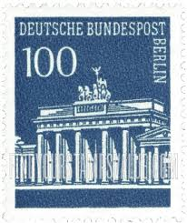 |
| Dreamstime.com | Streets Old City Potsdam Stock Photos - Free & Royalty-Free Stock Photos from Dreamstime | 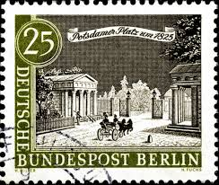 |
| Alamy | German postage stamp brandenburg hi-res stock photography and images - Alamy | 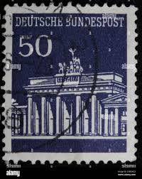 |
| Alamy | Germany Postage Stamp - Brandenburg Gate Stock Photo - Alamy | 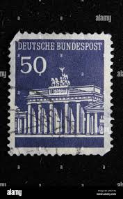 |
| eBay | Germany - Berlin, Postage Stamp, #9N255 (5 Ea) Mint No Gum, 1966 (AD) | eBay | 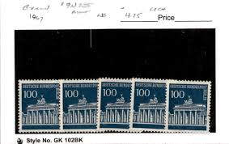 |
| Find Your Stamps Value | BERLIN - Brandenburg Gate Type of Germany 100pf Dark blue stamp price, value | 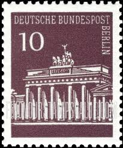 |
| Alamy | Berlin postage stamp vintage hi-res stock photography and images - Alamy | 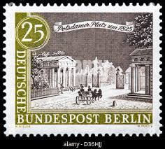 |
| Free stamp catalogue | Stamps from Germany, Federal Republic - Freestampcatalogue.com - The free online stampcatalogue with over 500.000 stamps listed. | 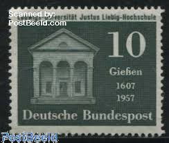 |
| eBay | Germany - 1966 Brandenburger Tor | eBay | 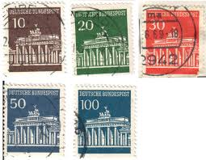 |
| eBay | 020 - GERMANY - ERROR - Perforation - Used Stamp | eBay | 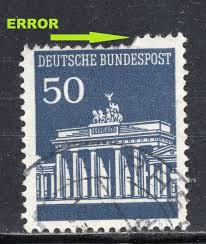 |
| Colnect | Germany, Federal Republic : Stamps [Year: 1967] [1/9] : Colnect 📮 | 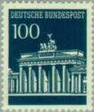 |
| CollectorBazar | Germany 1966 Brandenburger tor mnh | 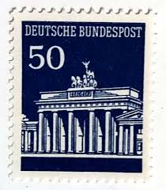 |
| eBay | DR-3.Reich 757 ER mit Drei Bogenecken gest. (B7603 | eBay | 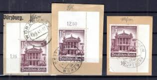 |
| Stamp Auction Network | catalog Level 3 | 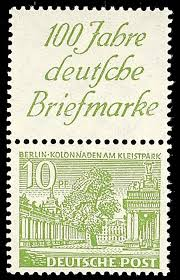 |
| HipStamp | Germany Berlin #9N200 used 1963 views of old Berlin 25pf | Europe - Germany & Colonies - Berlin, General Issue Stamp / HipStamp | 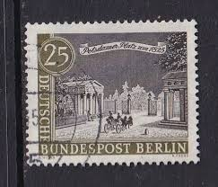 |
| eBay | West-Germany 1967 Brandenburg Gate 100 Pfg Red # 956 MNH | eBay | 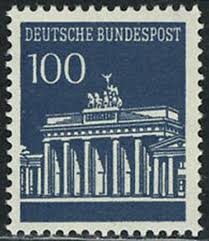 |
| Dreamstime.com | 431 Berlin Serie Stock Photos - Free & Royalty-Free Stock Photos from Dreamstime | |
| eBay | GERMANY-BERLIN BAUTEN-KOMBI -MI# W4 , W 33 -CV € 160 ** MNH LUXE | eBay | |
| eBay | BRD FRG #Mi509v MNH 1966 Brandenburg Gate Berlin [955 YT371 SG1415] | eBay | |
| Shutterstock | 2+ Thousand Bundespost Royalty-Free Images, Stock Photos & Pictures | Shutterstock | |
| eBay | Germany 1966-68 100pf BRANDENBURG GATE SC 956 MNH | eBay | |
| eBay | WEST BERLIN # 9N200 MNH POTSDAM SQUARE | eBay | |
| eBay | Germany #956 Mint Hinged (SCV=$8.50) | eBay | |
| Shutterstock | Moscow Russia February 12 2021 Stamp Stock Photo 1915744714 | Shutterstock | |
| Shutterstock | Circa Germany: Over 52,220 Royalty-Free Licensable Stock Photos | Shutterstock | |
| eBay | Germany Berlin 1962-63 VIEW OF OLD BERLIN, POTSDAM SQUARE SC 9N200 MNH | eBay |